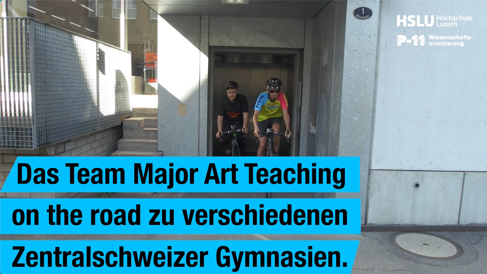
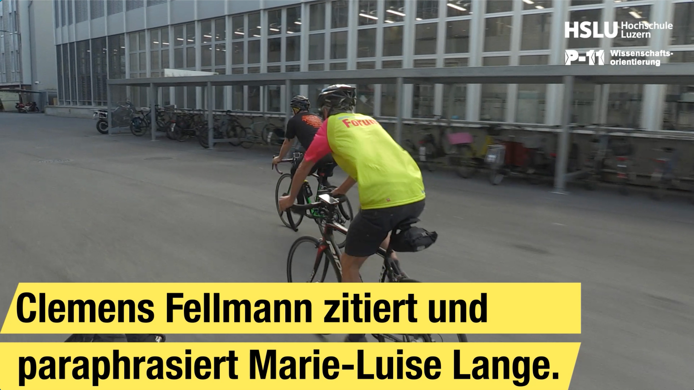
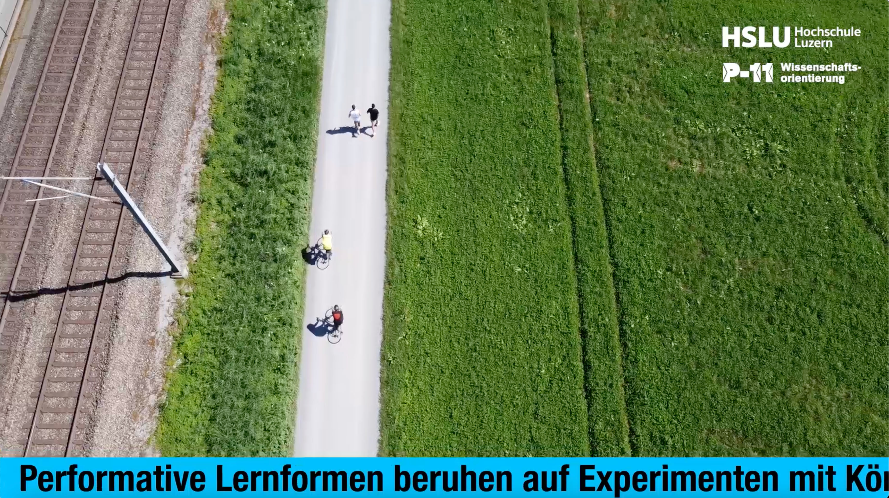
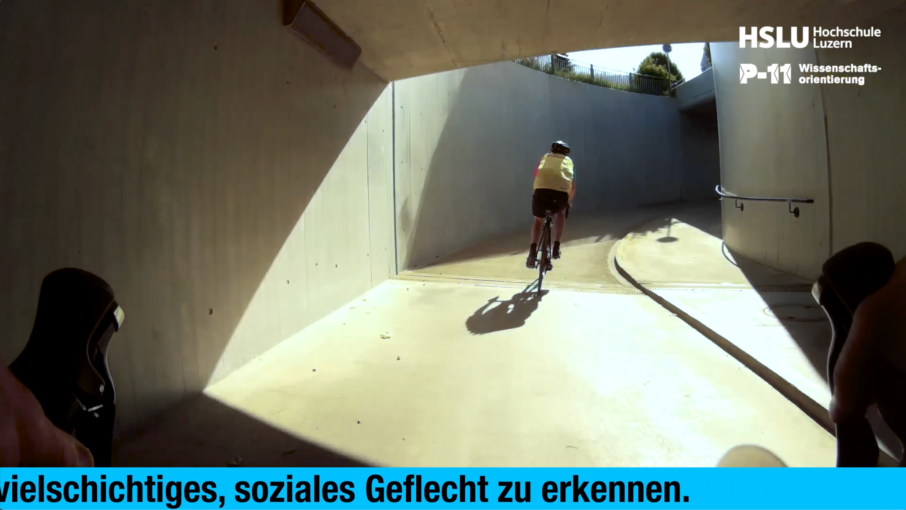
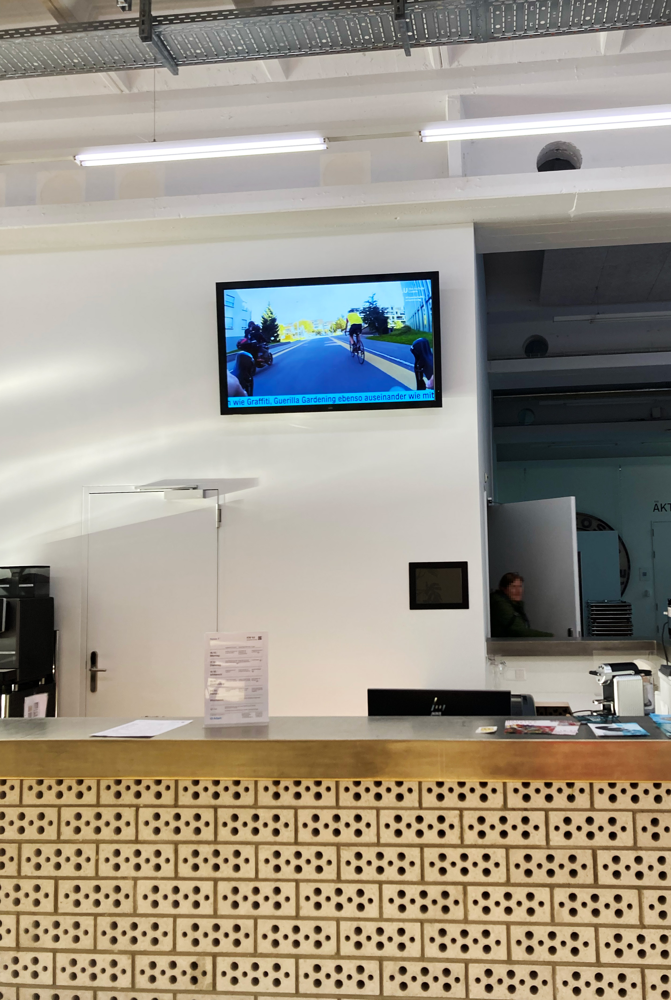
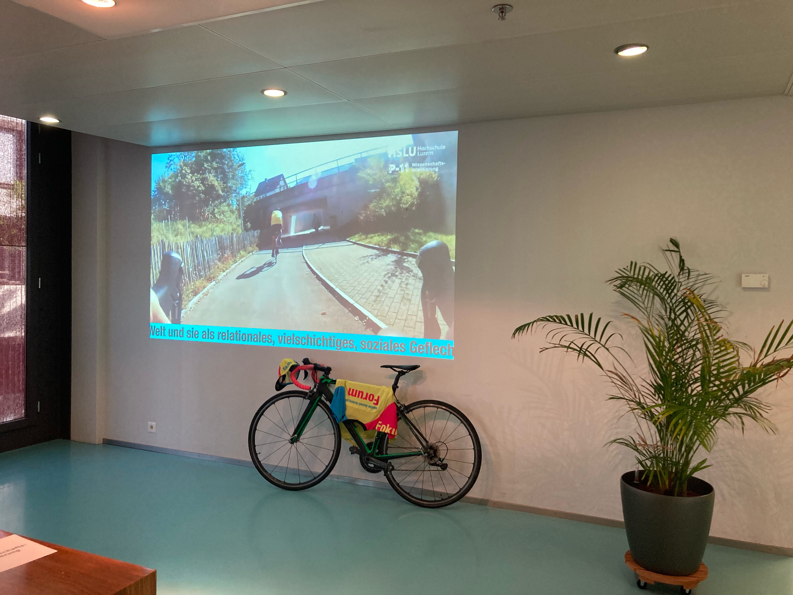

We are here tour

Mit der WE ARE HERE TOUR untersuchen wir künstlerische Methoden und Formate zur Vermittlung von kunstpädagogischer Forschung. Ausgangslage für dieses Projekt war der Vortrag «I’m here – ästhetische Bildung als Präsenz, Ereignis, Kommunikation Aufmerksamkeit und Teilhabe» von Marie-Luise Lange, welcher in der Reihe «Kunstpädagogische Positionen» erschienen ist (vgl. https://kunst.uni-koeln.de/kpp/ Zugriff am 16. Mai 23).
Dieser gab Anlass dazu, das bereits im Titel manifestierte Verständnis von ästhetischer Bildung exemplarisch in Form eines performativen Projektes umzusetzen, welches als Video festgehalten, weiter gestaltet und schliesslich als Intervention im Hochschulkontext platziert wurde.
Als gestalterische Referenz dienten dabei die formalästhetischen und dramaturgischen Eigenheiten der Berichterstattung von klassischen Etappenrennen im Strassenradsport. Tatsächlich verfolgten wir die Absicht, sämtliche Gymnasien der Zentralschweiz mit dem Fahrrad zu besuchen, welche potentielle Praktikumsplätze oder zukünftige Wirkungsstätten unserer (Art Teaching - ) Studierenden darstellen. «I’m here» oder vielmehr, «We’re here» war also keine blosse Floskel, sondern ein ernst gemeintes Statement für Verbindlichkeit gegenüber unseren Partnerinstitutionen bzw. deren Fachschaften Bildnerisches Gestalten. Unser Besuch an diesen Bildungseinrichtungen hatte einerseits einen werbewirksamen Aspekt, indem wir die Lehrpersonen auf unsere Weiterbildungsveranstaltungen einluden und andererseits ermöglichten wir durch unser Auftreten einen Zugang zu unserem Verständnis des Performative Turns im Kontext der Kunstpädagogik. Schliesslich platzierten wir das daraus entstandene Video auf dem Infoscreen im Foyer der HSLU – DFK und unterstuchten die Art und Weise, wie sich die ausgewählten Inhalte über einen längeren Zeitraum scheinbar beiläufig einer breiteren Gruppe von Studierenden und Mitarbeitenenden der Hochschule vermittelten. Mit einem ähnlichen Fokus folgte im März 25 das Praxisforum unter dem Titel Aktion & Ereignis.





